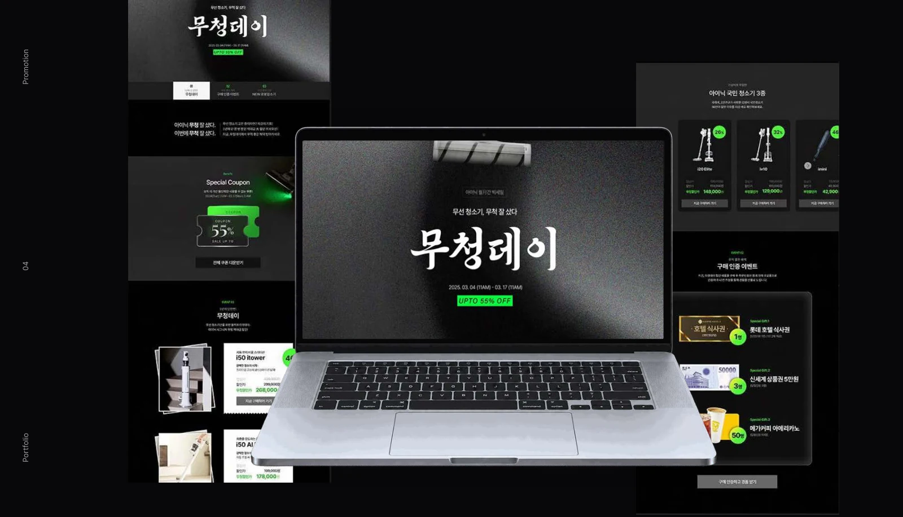
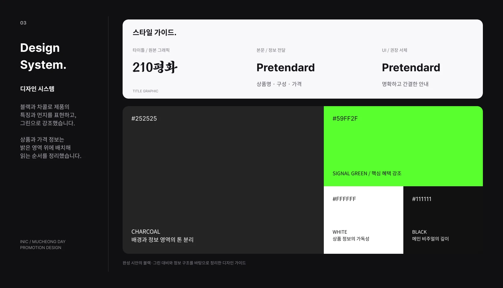
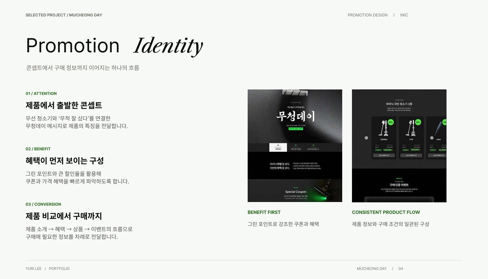
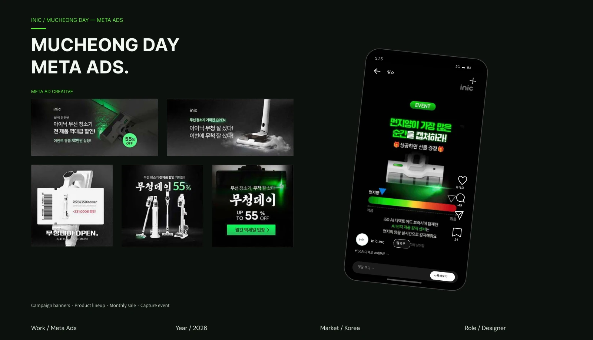

← PROJECTS
INIC PROJECT / 02
무척 잘 샀다, 무청데이
블랙과 그린의 대비로 제품과 혜택을 구분하고, 구매에 필요한 정보를 순서대로 담았습니다.
- 분야
- 프로모션
- 참여
- 메타 광고 디자인

VIEW LARGEDESIGN APPROACH
DESIGN
NOTES.
- 01 / 콘셉트
제품에서 시작한 메시지
무선 청소기와 ‘무척 잘 샀다’를 연결하고, 블랙·차콜과 거친 질감으로 화면을 구성했습니다.
- 02 / 설계
그린으로 강조한 혜택
그린 포인트로 할인율과 쿠폰을 강조하고, 밝은 상품 영역에서 제품과 가격을 구분했습니다.
- 03 / 전개
제품에서 이벤트까지
제품 소개·혜택·상품·이벤트 순서로 페이지를 구성하고, 캠페인 메타 광고를 전개했습니다.
IN DETAIL.
이미지를 선택하면 크게 볼 수 있습니다.


VIEW LARGE

VIEW LARGE

VIEW LARGE